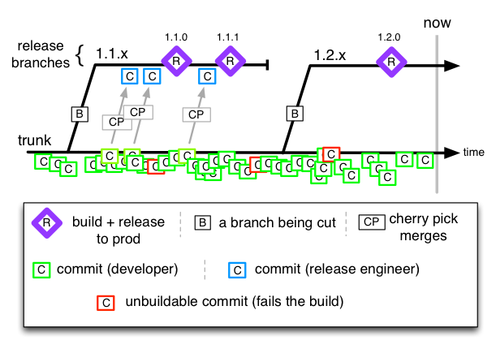
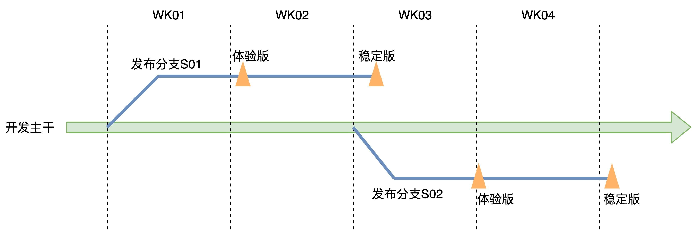
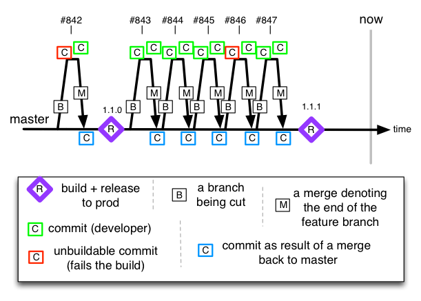
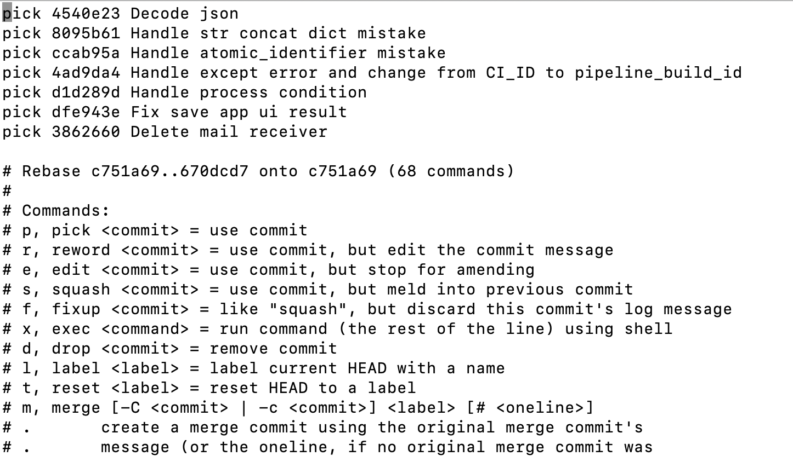
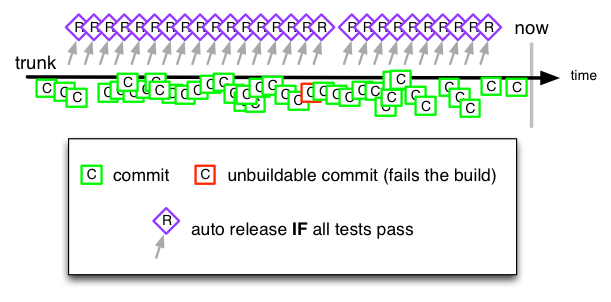
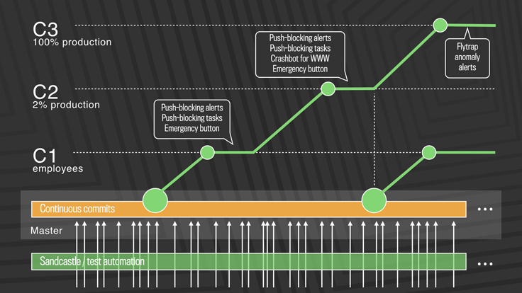
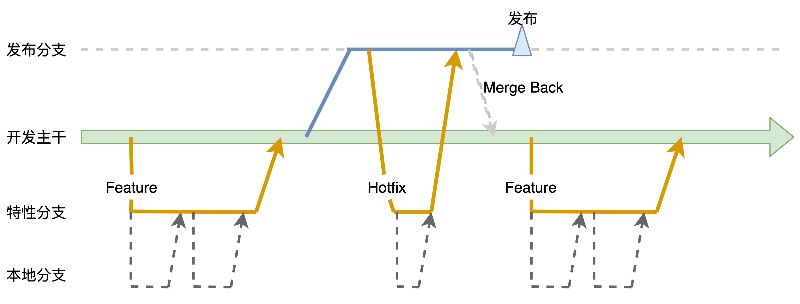

- 00 开篇词 从默默无闻到风靡全球，DevOps究竟有什么魔力？.md.html
- 01 DevOps的“定义”：DevOps究竟要解决什么问题？.md.html
- 02 DevOps的价值：数字化转型时代，DevOps是必选项？.md.html
- 03 DevOps的实施：到底是工具先行还是文化先行？.md.html
- 04 DevOps的衡量：你是否找到了DevOps的实施路线图？.md.html
- 05 价值流分析：关于DevOps转型，我们应该从何处入手？.md.html
- 06 转型之路：企业实施DevOps的常见路径和问题.md.html
- 07 业务敏捷：帮助DevOps快速落地的源动力.md.html
- 08 精益看板（上）：精益驱动的敏捷开发方法.md.html
- 09 精益看板（下）：精益驱动的敏捷开发方法.md.html
- 10 配置管理：最容易被忽视的DevOps工程实践基础.md.html
- 11 分支策略：让研发高效协作的关键要素.md.html
- 12 持续集成：你说的CI和我说的CI是一回事吗？.md.html
- 13 自动化测试：DevOps的阿克琉斯之踵.md.html
- 14 内建质量：丰田和亚马逊给我们的启示.md.html
- 15 技术债务：那些不可忽视的潜在问题.md.html
- 16 环境管理：一切皆代码是一种什么样的体验？.md.html
- 17 部署管理：低风险的部署发布策略.md.html
- 18 混沌工程：软件领域的反脆弱.md.html
- 19 正向度量：如何建立完整的DevOps度量体系？.md.html
- 20 持续改进：PDCA体系和持续改进的意义.md.html
- 21 开源还是自研：企业DevOps平台建设的三个阶段.md.html
- 22 产品设计之道：DevOps产品设计的五个层次.md.html
- 23 持续交付平台：现代流水线必备的十大特征（上）.md.html
- 24 持续交付平台：现代流水线必备的十大特征（下）.md.html
- 25 让数据说话：如何建设企业级数据度量平台？.md.html
- 26 平台产品研发：三个月完成千人规模的产品要怎么做？.md.html
- 27 巨人的肩膀：那些你不能忽视的开源工具.md.html
- 28 迈向云端：云原生应用时代的平台思考.md.html
- 29 向前一步：万人规模企业的DevOps实战转型案例（上）.md.html
- 30 向前一步：万人规模企业的DevOps实战转型案例（下）.md.html
- 期中总结 3个典型问题答疑及如何高效学习 (1).md.html
- 期中总结 3个典型问题答疑及如何高效学习.md.html
- 期末总结 在云时代，如何选择一款合适的流水线工具？.md.html
- 特别放送（一）成为DevOps工程师的必备技能（上）.md.html
- 特别放送（三）学习DevOps不得不了解的经典资料.md.html
- 特别放送（二）成为DevOps工程师的必备技能（下）.md.html
- 特别放送（五）关于DevOps组织和文化的那些趣事儿.md.html
- 特别放送（四）Jenkins产品经理是如何设计产品的？.md.html
- 结束语 持续改进，成就非凡！.md.html
- 捐赠
11 分支策略：让研发高效协作的关键要素
你好，我是石雪峰。今天我们来聊聊分支策略。
在上一讲中，我反复强调过一个理念，那就是将一切纳入版本控制。其实，现代版本控制系统不仅可以记录版本和变更记录，还有一个非常重要的功能，那就是分支管理。
现代软件开发讲究效率和质量，大多依赖于多团队间的协作来实现。对于一些大型软件来说，即便是百人团队规模的协作也没什么奇怪的。如果软件架构没有良好的拆分，很有可能出现几百人在一个代码仓库里面工作的情况。这时，分支管理就成了不可或缺的功能。
一方面，分支可以隔离不同开发人员的改动，给他们提供一个相对独立的空间，让他们能够完成自己的开发任务。另一方面，整个团队也需要根据软件的发布节奏来完成代码提交、审核、集成、测试等工作。
所以，如果说多人软件协作项目中有一个灵魂的话，我认为，这个灵魂就是分支策略。可以说，分支策略就是软件协作模式和发布模式的风向标。选择一种符合DevOps开发模式的分支策略，对于DevOps的实践落地也会大有帮助。
今天，我会给你拆解一些常见的分支策略，帮你了解这些策略的核心流程、优缺点，以及适用的场景和案例。
主干开发，分支发布

图片来源：- https://paulhammant.com/2013/12/04/what_is_your_branching_model/
在这种分支策略下，开发团队共享一条主干分支，所有的代码都直接提交到主干分支上，主干分支就相当于是一个代码的全量合集。在软件版本发布之前，会基于主干拉出一条以发布为目的的短分支。
你需要注意一下这句话里的两个关键词：
- 以发布为目的。这条分支存在的意义不是开发新功能，而是对现有功能进行验收，并在达到一定的质量标准后对外发布。一般来说，新功能不会基于这条分支提交，只有一些Bugfix会集成进来。所以，对于这种发布分支会有比较严格的权限管控。毕竟，谁都不想让那些乱七八糟、未经验证的功能跑到发布分支上来。
- 短分支。这条发布分支一般不会存在太长时间，只要经过回归验证，满足发布标准后，就可以直接对外发布，这时，这条分支的历史使命也就结束了。除非上线之后发现一些紧急问题需要修复，才会继续在这条分支上修改验证，并将改动同步回主干分支。所以，只要在主干分支和发布分支并行存在的时间段内，所有发布分支上的改动都需要同步回主分支，这也是我们不希望这条分支存在时间过长的原因，因为这会导致重复工作量的线性累计。
对于以版本节奏驱动的软件项目来说，这种分支策略非常常见，比如客户端产品，或者是那种需要在客户终端升级的智能硬件产品，像智能手机、智能电视等。
早在很多年前，乐视刚刚推出超级电视的时候，喊过一个口号叫“周周更新”。要知道，当时智能电视产品的更新频率普遍是几个月一次。
其实，如果你了解分支策略的话，你就会发现，“周周更新”的背后也没什么特别的。当时，我所在的团队恰好负责智能电视产品线的分支策略，采用的就是主干开发、分支发布的模式。其中基于主干的发布分支提前两周拉出，然后在发布分支上进行回归验证，并在第一周发出体验版本给喜欢尝鲜的用户试用。然后，根据用户反馈和后台收集的问题进行进一步修正，并最终发布一个稳定版本。我把当时的分支策略图分享给你，你可以参考一下。

这种模式的优势有三个：
- 对于研发团队来说，只有一条主线分支，不需要在多条分支间切换。
- 在发布分支拉出之后，主干分支依然处于可集成状态，研发节奏可以保持在一个相对平稳的状态。
- 发布分支一般以版本号命名，清晰易懂，线上哪个版本出了问题，就在哪个分支上修复。
不过，这种模式也存在着缺点和挑战：
- 它对主线分支的质量要求很高。如果主线分支出了问题，就会block所有开发团队的工作。对于一个百人团队、每日千次的提交规模来说，如果不对提交加以约束，这种情况的发生频率就会非常高。
- 它对团队协作的节奏要求很高。如果主线分支上的功能没有及时合入，但是业务方又坚持要在指定版本上线这个功能，这就会导致发布分支“难产”。甚至有些时候，会被迫允许部分未开发完成的功能在发布分支上继续开发，这会给发布分支的质量和稳定性造成很大的挑战。
- 在主线和发布分支并存期间，有可能会导致两边提交不同步的情况。比如，发布分支修复了一个线上问题，但是由于没有同步回主线，导致同样的问题在下一个版本中复现。测试出来的问题越多，这种情况出现的概率就越大，更不要说多版本并存的情况了。
这些问题的解决方法包括以下几点：
- 建立提交的准入门禁，不允许不符合质量标准的代码合入主线。
- 采用版本火车的方式，加快版本的迭代速度，功能“持票上车”，如果跟不上这个版本就随下个版本上线。另外，可以采用功能开关、热修复等手段，打破版本发布的固定节奏，以一种更加灵活的方式对外发布。
- 通过自动化手段扫描主线和发布分支的差异，建立一种规则。比如Hotfix必须主线和发布分支同时提交，或者发布分支上线后，由专人反向同步等。
分支开发，主干发布

图片来源：https://paulhammant.com/2013/12/04/what_is_your_branching_model/
当开发接到一个任务后，会基于主干拉出一条特性开发分支，在特性分支上完成功能开发验证之后，通过Merge request或者Pull request的方式发起合并请求，在评审通过后合入主干，并在主干完成功能的回归测试。开源社区流行的GitHub模式其实就是属于这种。
根据特性和团队的实际情况，还可以进一步细分为两种情况：
- 每条特性分支以特性编号或需求编号命名，在这条分支上，只完成一个功能的开发；
- 以开发模块为单位，拉出一条长线的特性分支，并在这条分支上进行开发协作。
两者的区别就在于特性分支存活的周期，拉出时间越长，跟主干分支的差异就越大，分支合并回去的冲突也就越大。所以，对于长线模式来说，要么是模块拆分得比较清晰，不会有其他人动这块功能，要么就是保持同主干的频繁同步。随着需求拆分粒度的变小，短分支的方式其实更合适。
这种模式下的优势也有两点：
- 分支开发相对比较独立，不会因为并行导致互相干扰。同时，特性只有在开发完成并验收通过后才会合入主干，对主干分支的质量起到了保护作用；
- 随着特性分支的流行，在这种模式下，分支成了特性天然的载体。一个特性所关联的所有代码可以保存在一条特性分支上，这为以特性为粒度进行发布的模式来说提供了一种新的可能性。也就是说，如果你想要发布哪个特性，就可以直接将特性分支合并到发布分支上，这就让某一个特性变得“可上可下”，而不是混在一大堆代码当中，想拆也拆不出来。
关于这种特性分支发布的方法，我给你提供一份参考资料，你可以了解一下。不过，我想提醒你的是，特性发布虽然看起来很好，但是有三个前置条件：第一个是特性拆分得足够小，第二是有强大的测试环境作支撑，可以满足灵活的特性组合验证需求，第三是要有一套自动化的特性管理工具。
当然，分支开发、主干发布的模式也有缺点和挑战：
- 非常考验团队特性拆分的能力。如果一个特性过大，会导致大量并行开发的分支存在，分支的集成周期拉长，潜在的冲突也会增多。另外，分支长期存在也会造成跟主线差异过大的问题。所以，特性的粒度和分支存活的周期是关键要素。根据经验来看，分支存活的周期一般不要超过一周。
- 对特性分支的命名规范要求很高。由于大量特性分支的拉出，整个代码仓库会显得非常乱。面对一大堆分支，谁也说不清到底哪个还活着，哪个已经没用了。所以，如果能够跟变更管理系统打通，自动化创建分支就最好了。
- 特性分支的原子性和完整性，保证一个特性的关联改动需要提交到一条分支上，而不是到处都是。同时，特性分支上的提交也需要尽量清晰，典型的就是原子性提交。
我之前所在的一个团队就是采用的这种分支策略。有一次，我为了分支策略的执行细节跟研发负责人争得面红耳赤，争论的核心点就是：当特性分支合并回主干的时候，到底要不要对特性分支上的代码进行整理？
只要做过开发，你就会知道，很少有人能只用一次提交就把代码写对的，因为总是会有这样那样的问题，导致特性分支上的提交乱七八糟。
在合入主干的时候，为了保证代码的原子性，其实是有机会对代码提交进行重新编排的，Git在这方面可以说非常强大。如果你熟练掌握git rebase命令，就可以快速合并分拆提交，将每一个提交整理为有意义的原子性的提交，再合入主干，或者干脆把特性分支上的改动压合成一个提交。当然，这样做的代价就是不断重写特性分支的历史，给研发团队带来额外的工作量。我跟你分享一些常见的命令。
比如：当前特性分支feature1，主分支master，那么，你可以执行以下命令整理提交历史：
git checkout feature1 && git fetch origin && git rebase -i origin/master

最常见的操作包括：- p：选择提交；- r：更新提交的注释信息；- e：编辑提交，可以将一个提交拆分成多个；- s：压合提交，将多个提交合并成一个；- f：类似压合提交，但是放弃这个提交的注释信息，直接使用合并提交的注释信息；- 当然，在git rebase的交互界面中，你也可以调整提交的顺序，比如将特性功能和关联的Bugfix整合在一起。
需要提醒你的是，分支策略代表了研发团队的行为准则，每个团队都需要磨合出一套适合自己的模式来。
主干开发，主干发布

图片来源：https://paulhammant.com/2013/12/04/what_is_your_branching_model/
今天给你介绍的第三种分支策略是主干开发、主干发布。武学高手修炼到一定境界之后，往往会发现大道至简，分支策略也是如此。所以，第三种分支策略可以简单理解为没有策略。团队只有一条分支，开发人员的代码改动都直接集成到这条主干分支上，同时，软件的发布也基于这条主干分支进行。
对于持续交付而言，最理想的情况就是，每一次提交都能经历一系列的自动化环境并部署到生产环境上面，而这种模式距离这个目标就更近了一点。
可想而知，如果想要做到主干分支在任何时间都处于可发布状态，那么，这就对每一次提交的代码质量要求非常高。
在一些追求工程卓越的公司里，你要提交一行代码，就必须经历“九九八十一难”，因为有一系列的自动化验收手段，还有极为严格的代码评审机制来保证你的提交不会把主干分支搞挂掉。当然，即便如此，问题也是难以避免的，那我们该怎么做呢？这里我就要给你介绍下Facebook的分支策略演进案例了。
Facebook最早采用的也是主干开发、分支发布的策略，每天固定发布两次。但是，随着业务发展的压力增大，团队对于发布频率有了更高的要求，这种分支策略已经无法满足每天多次发布的需求了。于是，他们开始着手改变分支策略，从主干开发、分支发布的模式，演变成了主干开发、主干发布的模式。
为了保证主干分支的质量，自动化验收手段是必不可少的，因此，每一次代码提交都会触发完整的编译构建、单元测试、代码扫描、自动化测试等过程。在代码合入主干后，会进行按需发布，先是发布到内部环境，也就是只有Facebook的员工才能看到这个版本，如果发现问题就立刻修复，如果没有问题，再进一步开放发布给2%的线上生产用户，同时自动化检测线上的反馈数据。直到确认一切正常，才会对所有用户开放。
最后，通过分支策略和发布策略的整合，注入自动化质量验收和线上数据反馈能力，最终将发布频率从固定的每天2次，提升到每天多次，甚至实现了按需发布的模式。Facebook最新的分支策略如图所示：

图片来源：https://engineering.fb.com/web/rapid-release-at-massive-scale/
看到这里，你可能会问：“在这三种典型策略中，哪种策略是最好的？我应该如何选择呢？”其实，这个问题也困扰着很多公司。
的确，不同类型、规模、行业的软件项目采用的分支策略可能都不尽相同，同时，发布频率、软件架构、基础设施能力、人员能力水平等因素也在制约着分支策略的应用效果。
所以，很难说有一种通用的分支策略可以满足所有场景的需求。但是，有些分支策略的原则更加适合于快速迭代发布的场景，也就更加适合DevOps的发展趋势。所以，我个人比较推荐的是主干开发结合特性分支的模式，也就是团队共享一条开发主干，特性开发基于主干拉出特性分支，快速开发验收并回归主干，同时，在特性分支和主干分别建立不同的质量门禁和自动化验收能力。
这样做的好处在于，可以加快代码集成频率，特性相对独立清晰，并且主干分支又可以保持一定的质量水平。不过，在执行的过程中，你需要遵守以下原则：
- 团队共享一条主干分支；
- 特性分支的存活周期要尽量短，最好不要超过3天；
- 每天向主干合并一次代码，如果特性分支存在超过1天，那么每天都要同步主干代码；
- 谨慎使用功能开关等技术手段，保持代码干净和历史清晰；
- 并行分支越少越好，如果可能的话，尽量采用主干发布。
关于最后一条，你需要注意的是，是否需要发布分支，主要取决于项目的发布模式。对于按照版本方式发布的项目来说，比如App、智能硬件系统，以及依赖大量外部系统联调的核心系统，可以按照发布固定的节奏拉出发布分支；对于发布节奏较快、系统架构拆分后相对独立的应用来说，可以直接采用主干发布的模式，并结合安全发布策略把控整体的发布质量。
这种分支发布的策略图如下所示：

总结
今天，我给你介绍了三种分支策略，建议你对照我给你分享的分支策略图，好好理解一下。另外， 我还介绍了适合DevOps模式的分支策略以及一些使用原则。还记得我最开始说的吗？分支策略就是研发协作和发布模式的风向标，分支策略的变化对整个研发团队的习惯和节奏都是一个非常大的调整，找到适合当前团队的分支策略，才是最重要的。
思考题
你目前所在的团队采用的是哪种分支策略？你觉得当前的分支策略有哪些问题或改进空间吗？你是否经历过分支策略的调整呢？如果有的话，你在这个过程中踩过什么“坑”吗？有没有什么心得呢？
欢迎在留言区写下你的思考和答案，我们一起讨论，共同学习进步。如果你觉得这篇文章对你有所帮助，欢迎你把文章分享给你的朋友。
© 2019 - 2023 Liangliang Lee. Powered by gin and hexo-theme-book.